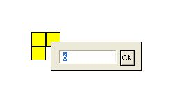

VOLVE 4.0
VOLVE 4.0
Tweak Energy
Click on  , and select the tweak energy tool. Now you can click
on any organism, spore or organic block and modify its allocated energy.
, and select the tweak energy tool. Now you can click
on any organism, spore or organic block and modify its allocated energy.
A small edit field will appear which will allow the user to edit the amount of energy for that object. This is what tweaking energy looks like in the simulation window:

You can leave the value unchanged by pressing the ENTER key, or the ESC key, or clicking on the OK button. Commas may be used. The energy value must be greater than zero.
This changes the total energy for a simulation (and will be reflected in the Universe Properties
screen).